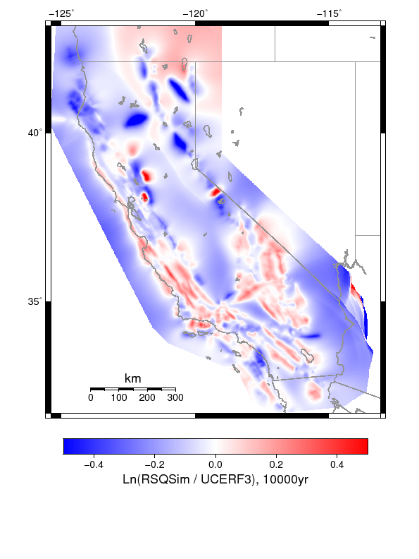
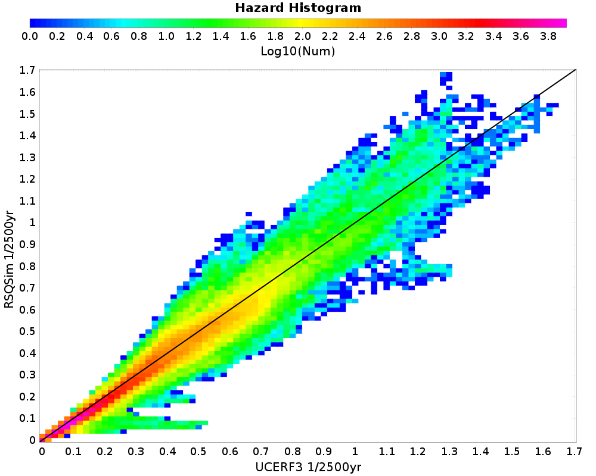
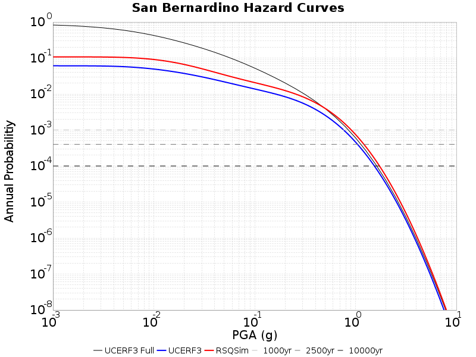
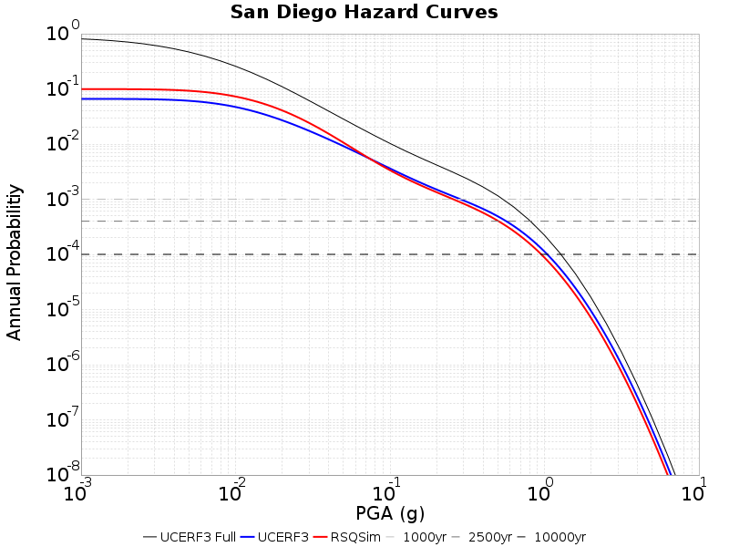
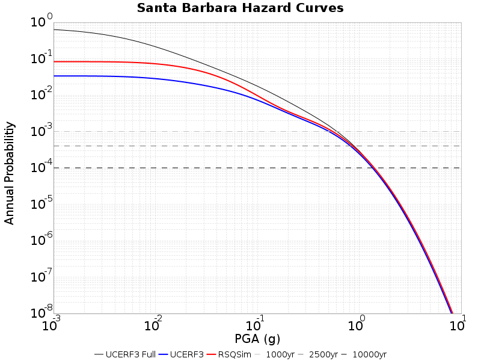

IMT: PGA (g)
Subsections participates in a rupture if at least 20.0 % of its area ruptures Catalog Details
| Return Period | RSQSim | UCERF3 | Ratio | Tight Ratio |
|---|---|---|---|---|
| 1000 yr | ||||
| 2500 yr | ||||
| 10000 yr |  |
| Return Period | 2-D Histogram |
|---|---|
| 1000 yr | |
| 2500 yr |  |
| 5000 yr | |
| 10000 yr |
| rsqsim | UCERF3 | Difference |
|---|---|---|
 |  |  |
| rsqsim | UCERF3 |
|---|---|
 |  |
 | |||
|---|---|---|---|
|  | |||
|  | |||
|  | |||
| null |
| Century City, 2500 yr |  |
|---|---|
| Century City, 10000 yr |  |
| Concord, 2500 yr |  |
| Concord, 10000 yr |  |
| Irvine, 2500 yr |  |
| Irvine, 10000 yr |  |
| Long Beach, 2500 yr |  |
| Long Beach, 10000 yr |  |
| Los Angeles, 2500 yr |  |
| Los Angeles, 10000 yr |  |
| Monterey, 2500 yr |  |
| Monterey, 10000 yr |  |
| Northridge, 2500 yr |  |
| Northridge, 10000 yr |  |
| Oakland, 2500 yr |  |
| Oakland, 10000 yr |  |
| Pasadena, 2500 yr |  |
| Pasadena, 10000 yr |  |
| Riverside, 2500 yr |  |
| Riverside, 10000 yr |  |
| Sacramento, 2500 yr |  |
| Sacramento, 10000 yr |  |
| San Bernardino, 2500 yr |  |
| San Bernardino, 10000 yr |  |
| San Diego, 2500 yr |  |
| San Diego, 10000 yr |  |
| San Francisco, 2500 yr |  |
| San Francisco, 10000 yr |  |
| San Jose, 2500 yr |  |
| San Jose, 10000 yr |  |
| San Luis Obispo, 2500 yr |  |
| San Luis Obispo, 10000 yr |  |
| San Mateo, 2500 yr |  |
| San Mateo, 10000 yr |  |
| Santa Barbara, 2500 yr |  |
| Santa Barbara, 10000 yr |  |
| Santa Cruz, 2500 yr |  |
| Santa Cruz, 10000 yr |  |
| Santa Rosa, 2500 yr |  |
| Santa Rosa, 10000 yr |  |
| USC, 2500 yr |  |
| USC, 10000 yr |  |
| Vallejo, 2500 yr |  |
| Vallejo, 10000 yr |  |
| Ventura, 2500 yr |  |
| Ventura, 10000 yr |  |